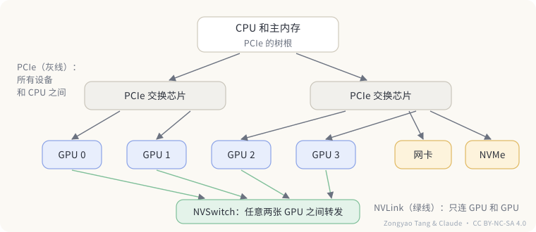
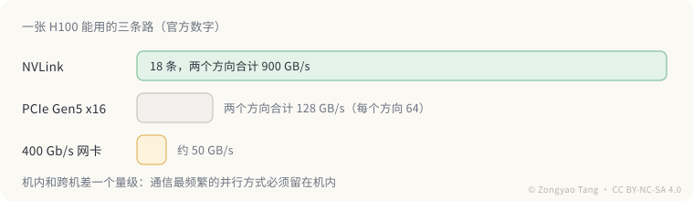
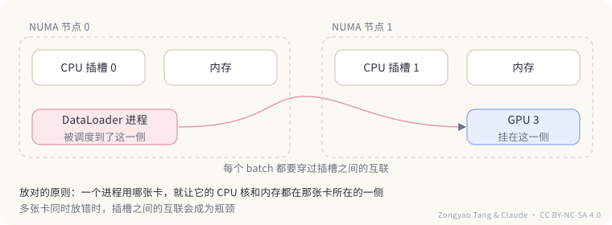

线索是：机内其实有两张路网 → 先看通用的那张（PCIe），它的带宽怎么算 → 再看 GPU 专用的那张（NVLink） → 有了两张网，两个设备之间走哪条路就取决于它们的“距离” → 最后把 CPU 和内存也放进来（NUMA）。这一单元的数字和命令，在排查多卡性能时会反复用到。
第 5 部分 · 高速互联5.1 机内互联：PCIe、NVLink 与 NVSwitch
这一单元回答一台机器里的八张卡，彼此之间、和 CPU 之间是怎么连的？各条路有多宽？
第 5 部分的起点。承接 0.3 的 DMA：数据在设备之间直接搬运，走的就是这里讲的这些通道。
- 机内有两张路网：通用的 PCIe 和 GPU 专用的 NVLink
- PCIe 的带宽 = 每条通道的速率 × 通道数，取路上最窄的一段
- NVLink 加 NVSwitch：每一对 GPU 之间都有专线
- 两个设备的“距离”，决定数据走哪条路
- NUMA：进程、内存和设备要放在同一侧
讲解
1机内有两张路网：通用的 PCIe 和 GPU 专用的 NVLink
一台多卡服务器里，所有设备（GPU、网卡、NVMe 硬盘）都通过 PCIe 挂在 CPU 下面；此外 GPU 之间还有一张单独的网：NVLink。前者谁都能用，后者只在 GPU 之间传数据。

一台多卡服务器里的连接（示意，只画了 4 张卡和一块网卡） 把机箱里和数据传输有关的部件摆出来，一共四类：CPU（连着主内存）、GPU、网卡、NVMe 硬盘。它们之间的连接有两种。
PCIe 是通用的。它是一棵树：树根在 CPU（叫 root complex），下面可以接交换芯片（PCIe switch），再往下才是一个个设备。所有“设备和 CPU 之间”的流量都走它：
- 主内存 → 显存（0.1 里的第 3 步，把 batch 拷上 GPU）
- 显存 ↔ 网卡（跨机通信时，数据出入这台机器）
- 硬盘 → 主内存或显存
NVLink 是专用的，只连接 GPU 和 GPU（经过 NVSwitch 芯片时，可以连到任意一张卡）。多卡之间同步梯度、张量并行里每一层的数据交换，走的都是它。
没有 NVLink 的机器（比如消费级显卡组的多卡机器），GPU 之间的数据只能走 PCIe，慢一个量级，这也是它们多卡扩展效率差的主要原因。
这张图决定了第 0 部分那条管道里好几段的宽度。后面三节分别把 PCIe、NVLink 和“走哪条路”讲清。
打个比方像一座城市：普通道路（PCIe）通到每家每户，什么车都能走；几个大工厂之间另修了专用的货运铁路（NVLink），只运它们之间的货。
所以看一次数据传输快不快，先问它走的是哪张网：CPU 到 GPU、GPU 到网卡只能走 PCIe；GPU 到 GPU 有 NVLink 就走 NVLink。
- 先看通用的那张网。它的带宽有一个简单的算法，也有两个常见的坑。
2PCIe 的带宽 = 每条通道的速率 × 通道数，取路上最窄的一段
PCIe 每升一代，每条通道（lane）的速率翻一倍；一个设备最多用 16 条通道。Gen4 x16 每个方向约 32 GB/s，Gen5 x16 每个方向约 64 GB/s。数据从一个设备到另一个设备要经过几段链路，实际带宽由其中最窄的一段决定。
怎么算。 记两个数就够了：
- 每条通道每个方向的速率：Gen3 约 1 GB/s，Gen4 约 2 GB/s，Gen5 约 4 GB/s。
- 通道数：显卡和高速网卡通常是 x16。
于是 Gen4 x16 每个方向约 32 GB/s（A100 这一代），Gen5 x16 每个方向约 64 GB/s（H100 这一代）。厂商有时把两个方向加起来报成 64 和 128，看数字时要分清是单向还是双向。
把它和别的数字放在一起，就知道它在管道里是宽是窄：
- 主内存带宽：每个 CPU 插槽上百 GB/s。
- 一块 400 Gb/s 的网卡：约 50 GB/s，一条 Gen5 x16 刚好喂得满。
- NVLink：每张卡几百 GB/s（下一节）。
第一个坑：协商降级。 PCIe 链路在开机时“训练”，两端协商出能稳定工作的代数和通道数。插槽没插紧、转接线质量差、BIOS 设置不对，都可能让一条本该是 Gen4 x16 的链路跑在 Gen3 或 x8 上，带宽只剩一半甚至四分之一，而系统不会报错。
第二个坑：共享上游。 为了在一个 CPU 下面挂 8 张卡和若干网卡，服务器会用 PCIe 交换芯片把一条上行链路分给好几个设备。这些设备各自到交换芯片是 x16，但它们同时和 CPU 通信时，要共享那一条上行链路。比如 4 张卡共用一条 x16 上行，同时从主内存加载数据时，每张卡只能分到四分之一。
（同一个交换芯片下面的两个设备互相传数据时，可以不经过上行链路，这一点后面讲“距离”时会用到。）
排查：查看一条 PCIe 链路实际跑在什么速度上
lspci能看到每个设备“能支持的”和“实际协商到的”两组数。# 找到 GPU 的总线地址 lspci | grep -i nvidia # 看某个设备的链路状态（需要 root） sudo lspci -vv -s 3b:00.0 | grep -E "LnkCap|LnkSta"
输出里有两行要对比：
LnkCap：设备支持的最高速率和宽度，比如Speed 16GT/s, Width x16。LnkSta：现在实际跑的速率和宽度。
速率的写法对应代数：8GT/s 是 Gen3，16GT/s 是 Gen4，32GT/s 是 Gen5。如果
LnkSta的速率或宽度低于LnkCap，这条链路就被降级了（有的版本会直接在后面标出 downgraded）。对网卡也做同样的检查：一块 400 Gb/s 的网卡如果只协商到 x8，就永远跑不满。
想直接量出结果，可以用 NVIDIA 的
nvbandwidth工具测主内存到每张卡、卡到卡的实际带宽，再和上面算出的数对比。八张卡里有一张明显偏低，多半就是它的链路或插槽有问题。打个比方像高速公路：每代把每条车道的限速翻倍，车道数另算。从 A 到 B 途中只要有一段只剩 4 车道，整趟的通行能力就按 4 车道算。
所以 PCIe 很少是标称的那个数：链路可能协商成了更低的代数或更少的通道，上游可能被几个设备共享。排查时要看的是“实际协商到的速率和宽度”。
- PCIe 是为“各种设备都能接”设计的。GPU 之间要交换的数据量太大，于是 NVIDIA 另修了一张网。
3NVLink 加 NVSwitch：每一对 GPU 之间都有专线
NVLink 是 GPU 之间专用的高速链路。A100 每张卡有 12 条，合计 600 GB/s；H100 每张卡有 18 条，合计 900 GB/s，按 NVIDIA 的说法是 PCIe Gen5 的 7 倍。NVSwitch 是它的交换芯片：每张卡的链路都接到交换芯片上，于是任意两张卡之间都能全速通信。
有多宽。 NVIDIA 给出的官方数字（都是每张卡所有链路、两个方向合计）：
- A100：12 条第三代 NVLink，合计 600 GB/s。
- H100：18 条第四代 NVLink，合计 900 GB/s。
- 对比：H100 的 PCIe Gen5 x16 合计 128 GB/s，所以官方说 NVLink 是它的 7 倍。
为什么需要交换芯片。 链路是点对点的。如果不用交换芯片，8 张卡要互相直连，每张卡就得把自己的链路分给另外 7 张卡，每一对之间只有一两条。这时两张卡之间能用的带宽只是总数的几分之一，而且不同的卡对之间可能还不一样。
NVSwitch 改变了接法：每张卡的全部链路都接到交换芯片上，由交换芯片在任意两张卡之间转发。于是任意一对卡通信时，都能用上各自的全部链路。这也让环形的 all-reduce（6.1）变得简单：环上的每一跳都是全速的。
放回全局看。 一张 H100 的几个“出口”：
- 到同机的其他 GPU：NVLink，合计 900 GB/s。
- 到主内存或网卡：PCIe，每个方向 64 GB/s。
- 经网卡到其他机器：一块 400 Gb/s 的网卡，约 50 GB/s。
机内和跨机之间差了一个量级。这个落差是第 7 部分所有并行方案的出发点：通信最频繁的并行方式（张量并行）必须留在机内，跨机只能放通信较少的并行方式。

三条路的宽度 新一代的机柜级系统把 NVLink 延伸到了机器之间（一个机柜里几十张卡都用 NVLink 相连），原理不变，只是“机内”的范围变大了。
排查：NVLink 是否都在正常工作
# 每条 NVLink 的状态和速率 nvidia-smi nvlink -s # 每条 NVLink 的错误计数 nvidia-smi nvlink -e # 两两之间能不能通过 NVLink 直接访问 nvidia-smi topo -p2p n
读法：
-s的输出里每条链路都应该是激活的，速率一致。有链路显示为未激活，说明这张卡少了一部分带宽。-e的错误计数应该基本不增长。隔一段时间再看一次，如果某条链路的计数一直在涨，这条链路有问题。topo -p2p n的矩阵里，卡与卡之间应该都是 OK。
内核日志里的线索。 GPU 出硬件类问题时，驱动会在内核日志里写一条带编号的 Xid 记录：
sudo dmesg -T | grep -i xid
编号的含义查 NVIDIA 的 Xid 文档（https://docs.nvidia.com/deploy/xid-errors/）。和互联有关、比较常见的两个：74 是 NVLink 错误，79 是 GPU 从总线上掉线。训练中途莫名卡住或报错时，先看一眼这里，能省掉很多在软件层的猜测。
用
nvbandwidth测一遍卡到卡的带宽，可以把“状态正常但实际偏慢”的情况也找出来。打个比方像电话：早期两两之间拉专线，8 个人就要把自己的线分给 7 个对象；有了交换机，每个人把所有的线都接到交换机上，想和谁说话都能用上全部线路。
所以同一台机器内的集合通信（梯度同步、张量并行）几乎不会是瓶颈；瓶颈通常出现在数据离开这台机器的那一刻，带宽一下子窄了一个量级。
- 两张路网都清楚了。那么具体到两个设备之间，数据走哪条路？答案取决于它们的相对位置。
4两个设备的“距离”，决定数据走哪条路
两个设备之间的数据走哪条路，取决于它们在 PCIe 这棵树上离得多近：有 NVLink 直连最好；在同一个 PCIe 交换芯片下面，可以不经过 CPU 直接互传；隔着 CPU 的根端口就要绕一下；分属两个 CPU 插槽最远。
nvidia-smi topo -m会打印一张矩阵，列出每两个设备（GPU 和网卡）之间的关系。它的图例从近到远是：- NV#：有 # 条 NVLink 相连。只会出现在 GPU 和 GPU 之间。
- PIX：中间最多隔一个 PCIe 桥，也就是在同一个 PCIe 交换芯片下面。
- PXB：隔着多个 PCIe 桥，但不经过 CPU 的主桥。
- PHB：要经过 CPU 上的 PCIe 主桥。
- NODE：在同一个 NUMA 节点内，但要跨不同的主桥。
- SYS：分属不同的 NUMA 节点，要跨 CPU 插槽之间的互联。
距离为什么重要，看两个最常见的配对。
GPU 和网卡。 跨机通信时，数据要从显存到网卡。如果 GPU 和网卡在同一个 PCIe 交换芯片下面（PIX），网卡可以直接读写显存（GPUDirect RDMA，5.2 会讲），数据不经过 CPU 和主内存。如果它们离得远，数据就得先拷到主内存再交给网卡，多一次拷贝，还要占用 CPU 一侧的带宽。所以为训练设计的服务器，通常给每一两张 GPU 配一块网卡，并把它们放在同一个交换芯片下面。
GPU 和 GPU（没有 NVLink 时）。 同一个交换芯片下的两张卡可以直接互传；隔着 CPU 的两张卡，流量要上行到 CPU 再下来，更慢，而且受上行链路共享的影响。
一个会让“近路”失效的设置。 服务器开启 IO 虚拟化（IOMMU、PCIe 的 ACS）后，同一个交换芯片下的设备互传会被强制绕道 CPU 检查。NCCL 的文档明确提醒：这会让性能显著下降，甚至卡死。裸机上跑训练时，通常要把它关掉。
排查：读懂 nvidia-smi topo -m，并检查“近路”有没有被堵
nvidia-smi topo -m
拿到矩阵后看三件事：
- GPU 之间是不是都是 NV 加一个数字，数字是否一致。出现 PHB 或 SYS，说明那一对卡之间没有 NVLink 可用。
- 每张 GPU 和哪块网卡最近（PIX 或 PXB）。记下这个配对，它就是这张卡跨机通信时应该走的网卡。
- 矩阵后面的 CPU Affinity 和 NUMA Affinity 两列：每张卡属于哪个 NUMA 节点、对应哪些 CPU 核。
检查 ACS。
sudo lspci -vvv | grep ACSCtl
输出里出现
SrcValid+的行，说明那个桥上的 ACS 可能是开着的。检查 IOMMU。
cat /proc/cmdline sudo dmesg | grep -i -E "iommu|dmar"
检查 GPU 之间能否直接互访。
nvidia-smi topo -p2p p # 经 PCIe nvidia-smi topo -p2p n # 经 NVLink
这些检查都来自 NCCL 官方的排查文档。在容器或虚拟机里还要多确认一点：NCCL 是通过读
/sys来了解 PCIe 拓扑的，如果容器里看到的/sys不完整，或者虚拟机给出的是一棵“假”的 PCIe 树，NCCL 就可能选错路。打个比方像同一栋楼里送文件：同一个办公室递过去就行；同一层要走一段走廊；不同楼层得等电梯；在另一栋楼就要出大门。
所以硬件怎么插、软件把哪张卡和哪块网卡配成一对，直接决定带宽。NCCL 启动时做的第一件事就是摸清这些距离，再据此选路。
- 最后把 CPU 和内存也放进这张图。它们同样有“在哪一侧”的问题。
5NUMA：进程、内存和设备要放在同一侧
双路服务器有两个 CPU 插槽，各带一半内存，各挂一半 GPU 和网卡。访问“自己这一侧”的内存和设备快，访问另一侧要经过两个 CPU 之间的互联，更慢，也更容易拥挤。
NUMA 的意思是“访问不同位置的内存，速度不一样”。在双路服务器上：
- 每个 CPU 插槽和它直连的内存组成一个 NUMA 节点。
- 每张 GPU、每块网卡通过 PCIe 挂在其中一个插槽下面。
- 两个插槽之间有互联，但带宽有限，而且所有跨侧的流量都要共用它。
把第 0 部分的管道套进来，看一个放错位置的例子：GPU 3 挂在第二个插槽下，但给它准备数据的 DataLoader 进程被操作系统调度到了第一个插槽的核上，锁页内存也分配在第一个插槽的内存里。于是每个 batch 都要从第一侧的内存出发，穿过插槽间的互联，才能到达第二侧的 PCIe，再进 GPU 3。多张卡同时这样做，互联就会成为瓶颈。

放错位置的例子 通信也一样。NCCL 在主机一侧有负责收发的线程（6.2 会讲）。它如果跑在远离对应网卡的那一侧，效率就会打折。NCCL 默认会把自己的线程绑到 GPU 所在一侧的核上，但前提是外层（容器、调度系统）给它的可用核里包含这些核。
怎么看：
numactl --hardware # 有几个 NUMA 节点，各有哪些核、多少内存 nvidia-smi topo -m # 每张卡的 NUMA Affinity lscpu --extended=CPU,NODE,SOCKET,CORE
怎么放对：在 Kubernetes 上由 kubelet 的拓扑管理策略负责（第 8 部分），裸机上可以用
numactl或taskset绑定。原则只有一条：一个进程用哪张卡，就让它的 CPU 核和内存都在那张卡所在的一侧。打个比方像一栋有东西两翼的办公楼，每翼有自己的资料室。在东翼办公却总去西翼的资料室取文件，路上的时间就白白花掉了。
所以给某张 GPU 准备数据的进程，应该跑在这张卡所在一侧的 CPU 上，用这一侧的内存。放错了不会报错，只是悄悄变慢。
串起来
机内有两张路网：PCIe 连接一切，NVLink 只连 GPU。PCIe 的带宽取链路上最窄的一段；NVLink 比它宽一个量级，是机内集合通信的主力。两个设备离得越近（同一个交换芯片下），能走的路越直；NUMA 则提醒你，CPU 和内存也有“在哪一侧”的问题。
考考自己
不看讲解，用自己的话讲一遍。
- 多卡服务器内部有哪两张互联网络？各自连接什么？
- PCIe 的带宽是怎么算出来的？为什么实际值常常低于标称值？
- NVLink 的带宽大约是 PCIe 的多少倍？NVSwitch 解决了什么问题？
- nvidia-smi topo -m 输出里的 NV、PIX、PXB、PHB、NODE、SYS 各表示什么？哪种最近、哪种最远？
- 什么是 NUMA？它怎样影响多卡训练的数据加载和通信？
术语
- PCIe
- 高速外设互联总线
- NVLink
- NVIDIA 的 GPU 专用互联
- NVSwitch
- NVLink 交换芯片
- root complex
- 根复合体
- NUMA
- 非一致内存访问
- peer-to-peer
- 设备间直接传输